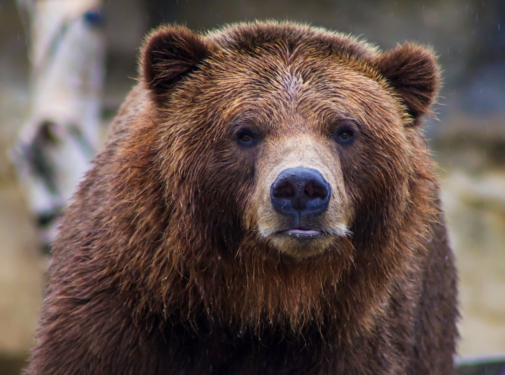

The brown bear (Ursus arctos) is a large bear species found across Eurasia and North America.[1][3] In North America, the populations of brown bears are called grizzly bears, while the subspecies that inhabits the Kodiak Islands of Alaska is known as the Kodiak bear.
Here are some bear species :
The following countries have the largest populations of brown bears:
As you can see the bear
